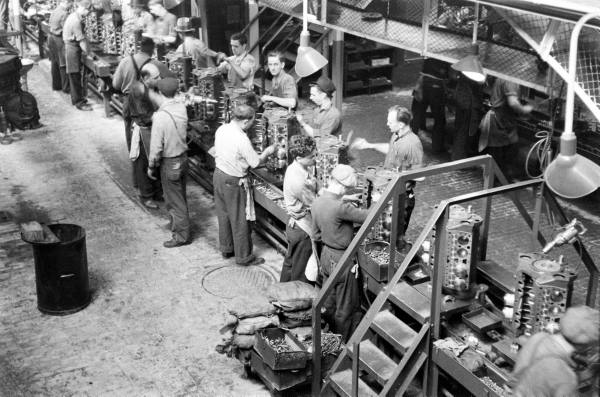
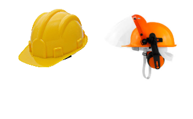
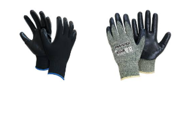
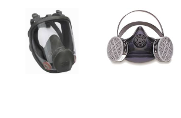
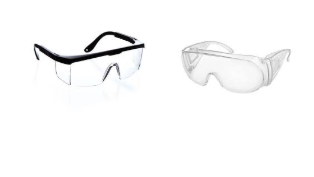
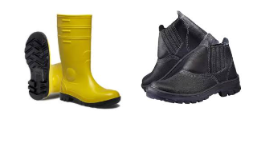
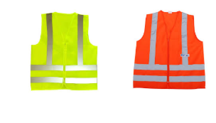

Informações sobre prevenção, segurança no trabalho, direitos dos trabalhadores e conscientização para ambientes profissionais mais seguros.
A prevenção deve sempre ser prioridade, independentemente da função exercida. Seguir normas de segurança, manter atenção no ambiente profissional e utilizar os equipamentos corretos ajuda a proteger não apenas você, mas também todos ao seu redor.
A identificação de riscos, a comunicação entre equipes e os cuidados diários no ambiente profissional são essenciais para evitar acidentes e preservar vidas.
Ver mais
Informações sobre segurança, saúde ocupacional, condições adequadas de trabalho e proteção ao trabalhador.
Saiba maisUtilizar corretamente os Equipamentos de Proteção Individual (EPIs) reduz riscos, previne acidentes e garante mais segurança durante o trabalho.

Protege contra impactos e acidentes na cabeça.

Protegem as mãos contra cortes e riscos químicos.

Evita inalação de partículas e produtos tóxicos.

Proteção ocular contra impactos e partículas.

Evitam escorregões e acidentes nos pés.

Melhora a visibilidade em áreas de risco.